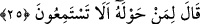
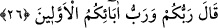
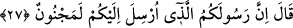

“Allah’ı bilme”nin mânâsı, beşer tâkati nisbetinde O’nunla mahlûkat arasındaki irtibat
ve âlemin Allah tarafından yaratılıp neş’et etmesi bakımından O’nu bilmektir. Allah’ı
bilme konusunda beşer tâkatinin yetmediği şeyler vardır. Burası kâmillerin hayret
vartasına düştükleri ve hakkıyla ma’rifetten âciz olduklarını îtiraf ettikleri yerlerdir.
25. (Fir’avn) etrafında bulunanlara: “İşitiyor musunuz?” dedi.
Fir’avn, Mûsâ’nın cevabını işitince kavminin kalplerinin etkilenmesinden ve ona
boyun eğmelerinden korkarak kavmi olan kıbtîlerin ileri gelenlerinden “etrafında
bulunanlara:” Onlar beş yüz kişi olup ziynetler bağlamış ve altın kürsüler üzerine
oturmuşlardı. “Onun söylediklerini “İşitiyor musunuz?” Dinleyin de sözlerine şaşın.
“dedi.” Fir’avn, bu tavrıyla kendisinin rab olduğunu kasdediyordu.
26. Musa dedi ki: “O, sizin de Rabbiniz, daha önceki atalarınızın da Rabbidir.”
“Musa”
açıklamasını
artırmak
ve
Fir’avn’u
rubûbiyyet
mertebesinden
merbûbiyyet/Rabb’in kulu olma mertebesine indirmek üzere “dedi ki: “O, sizin de
Rabbiniz, daha önceki atalarınızın da Rabbidir.”
Kâşifî der ki: “Mûsâ (a.s.) Cenâb-ı Hakk’ı tavsif ve beyan için bir âyetten/alâmetten,
izah ve teemmüle daha yakın olan başka bir âyete/alâmete geçti.”
Denilmiştir ki: Fir’avn kendi asrında ve zamanında yaşayanların rabbi olduğunu iddiâ
ediyordu. Kendinden önce olanlar için böyle bir iddiâda bulunmamıştı. Bu âyetle
rubûbiyyete müstehak olanın her asrın ve zamanın Rabbi olduğu ortaya çıkmış oldu.
27. Fir’avn: “Size gönderilen bu elçiniz mutlaka delidir.” dedi.
“Fir’avn:” küstahlığından ve kavmini hakkı kabul etmekten alıkoymak üzere “Size
gönderilen bu elçiniz mutlaka delidir.” Onun söyledikleri aklı olanlardan sâdır olmaz
“dedi.” Fir’avn’un “elçi” demesi, alay etmek içindi. Hz. Musa’nın kendisine
gönderilmiş olmasından kendisini daha üstte gördüğünden “elçiniz” diyerek onu
muhâtaplarına nisbet etmiştir.
el-Müfredât’ta geçtiği üzere “
(delilik)” nefis ile akıl arasına giren bir engeldir.